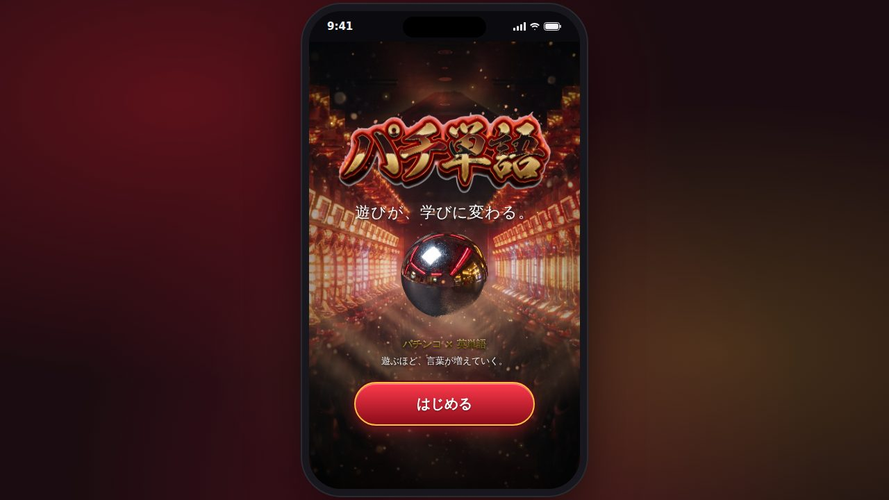
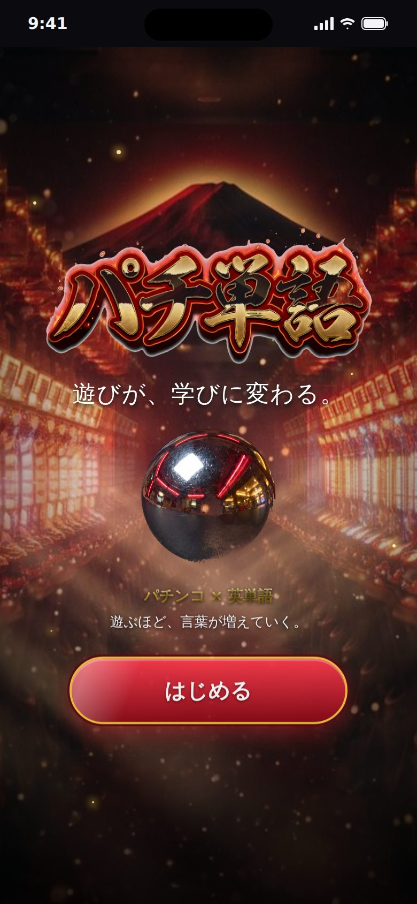
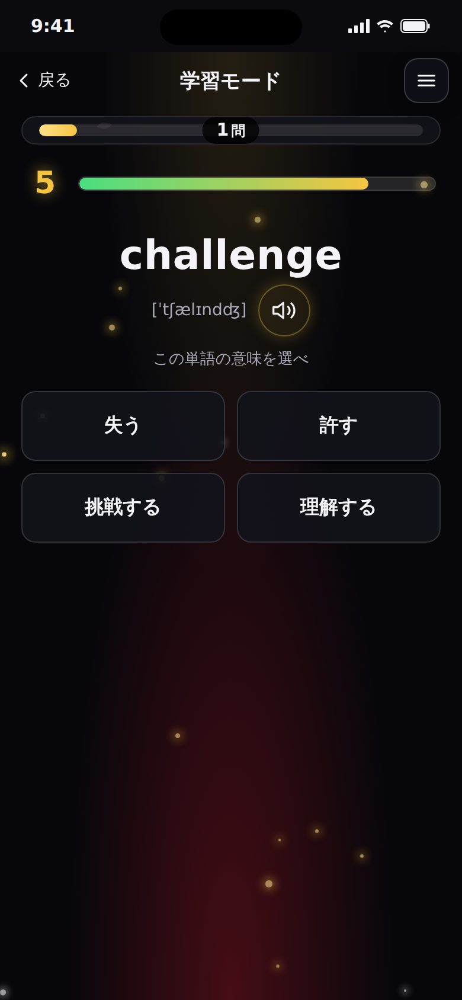
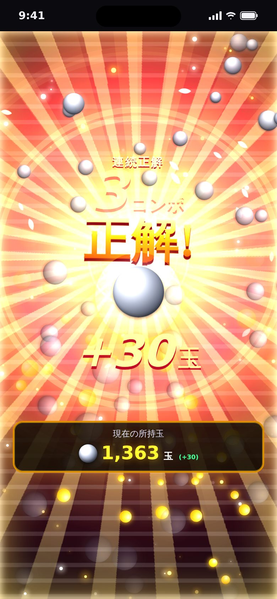
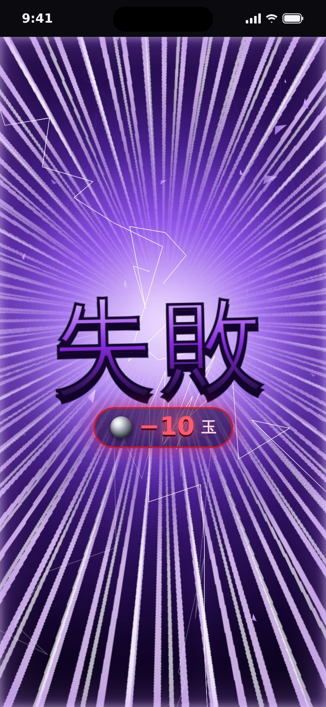
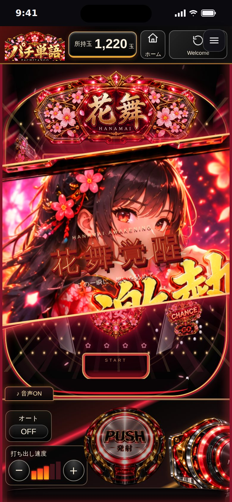

01 / Challenge · 解決したいこと
英単語の暗記は単調で、やる気が続かない。一方でゲームやパチンコの演出には「もう1回」と思わせる力がある。その気持ちよさを単語の反復に使えないかと考えた。
Work / 2026
英単語クイズに正解すると、パチンコの大当たりのような全画面演出が始まるスマホ向け英単語アプリ。「当たる気持ちよさ」で単語の反復を続けられるようにした。

英単語の暗記は単調で、やる気が続かない。一方でゲームやパチンコの演出には「もう1回」と思わせる力がある。その気持ちよさを単語の反復に使えないかと考えた。
4択の英単語クイズに、パチンコ風の演出を組み合わせたWebアプリ。正解すると全画面の大当たり演出で玉が増え、間違えると「失敗」演出で玉が減る。連続正解を続けると「確変」に入り、BGMと演出がさらに派手になる。





React 19 + TypeScript + Vite。演出は CSS アニメーションが中心。学習の記録はブラウザの localStorage に保存するため、サーバーはなし。GitHub Pages で公開している。
スマホのブラウザですぐに遊べます。演出のテンポを崩さないよう、1問6秒の制限時間と短い全画面演出を組み合わせ、BGM は画面を見ているときだけ流れるようにしました。